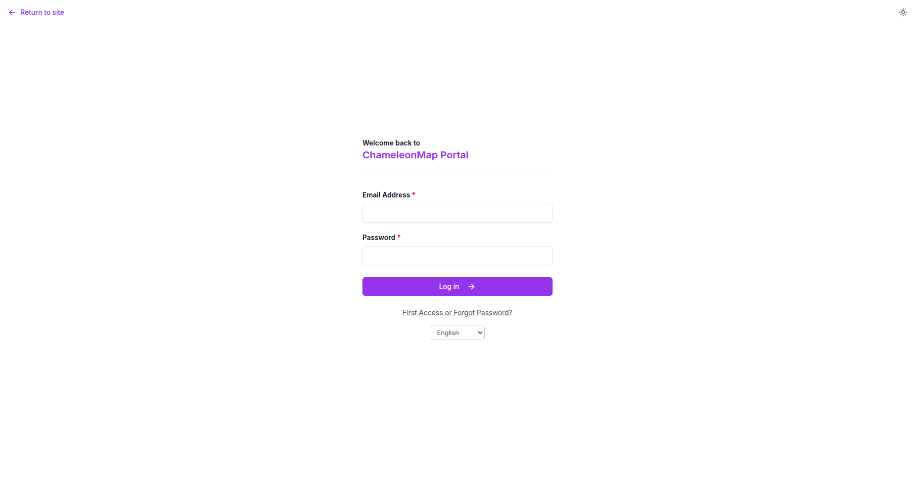
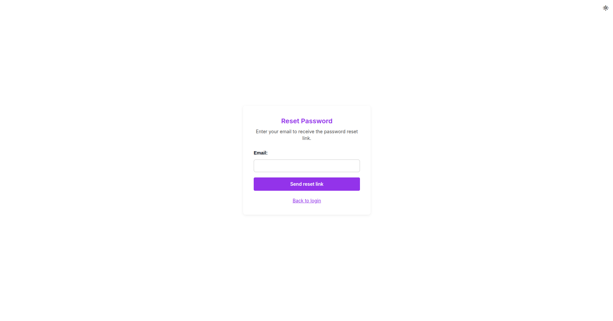
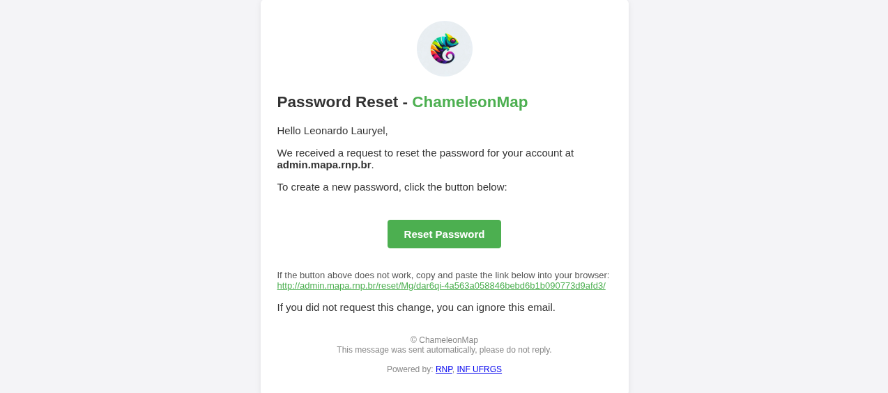
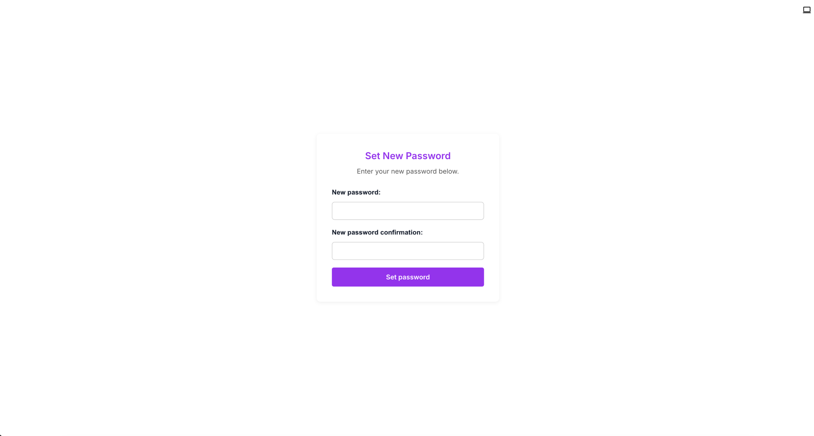

This section explains how users access ChameleonMap for the first time or reset their password when needed. In ChameleonMap, both actions use the same process through the First Access or Forgot Password? option on the tenant login page.
Each user must access ChameleonMap through the URL of the tenant to which they belong. The tenant URL is provided by the organization administrator and usually follows the domain configured for that environment.
Important: Use only the tenant URL provided by your administrator. A user account is valid only inside the tenant where it was created.
Make sure you have:

When a user is created by an administrator, no password is defined directly in the Administrative Portal. The user creates their password using the same flow used to recover an existing password.
To create or reset your password:



Check the spam or junk folder. If the message is not available, confirm with the administrator that the registered email address is correct.
Return to the login page and request a new first access or password reset email.
Ask the tenant administrator to verify that the user exists, belongs to the correct tenant, and is active.